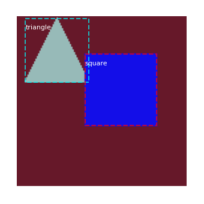
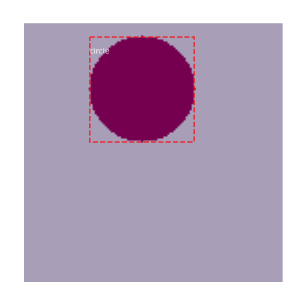

2020-12-10 19:29:30.500060: I tensorflow/core/common_runtime/gpu/gpu_device.cc:1697] Adding visible gpu devices: 0
Using TensorFlow backend.
2020-12-10 19:29:20.493704: I tensorflow/stream_executor/platform/default/dso_loader.cc:44] Successfully opened dynamic library cudart64_101.dll
2020-12-10 19:29:30.451749: I tensorflow/stream_executor/platform/default/dso_loader.cc:44] Successfully opened dynamic library nvcuda.dll
2020-12-10 19:29:30.468872: I tensorflow/core/common_runtime/gpu/gpu_device.cc:1555] Found device 0 with properties:
pciBusID: 0000:01:00.0 name: GeForce GTX 1060 computeCapability: 6.1
coreClock: 1.6705GHz coreCount: 10 deviceMemorySize: 6.00GiB deviceMemoryBandwidth: 178.99GiB/s
2020-12-10 19:29:30.468920: I tensorflow/stream_executor/platform/default/dso_loader.cc:44] Successfully opened dynamic library cudart64_101.dll
2020-12-10 19:29:30.476114: I tensorflow/stream_executor/platform/default/dso_loader.cc:44] Successfully opened dynamic library cublas64_10.dll
2020-12-10 19:29:30.479840: I tensorflow/stream_executor/platform/default/dso_loader.cc:44] Successfully opened dynamic library cufft64_10.dll
2020-12-10 19:29:30.481894: I tensorflow/stream_executor/platform/default/dso_loader.cc:44] Successfully opened dynamic library curand64_10.dll
2020-12-10 19:29:30.487024: I tensorflow/stream_executor/platform/default/dso_loader.cc:44] Successfully opened dynamic library cusolver64_10.dll
2020-12-10 19:29:30.490566: I tensorflow/stream_executor/platform/default/dso_loader.cc:44] Successfully opened dynamic library cusparse64_10.dll
2020-12-10 19:29:30.499959: I tensorflow/stream_executor/platform/default/dso_loader.cc:44] Successfully opened dynamic library cudnn64_7.dll
2020-12-10 19:29:30.500060: I tensorflow/core/common_runtime/gpu/gpu_device.cc:1697] Adding visible gpu devices: 0
2020-12-10 19:29:42.785484: I tensorflow/core/platform/cpu_feature_guard.cc:142] Your CPU supports instructions that this TensorFlow binary was not compiled to use: AVX2
2020-12-10 19:29:42.786107: I tensorflow/core/common_runtime/gpu/gpu_device.cc:1555] Found device 0 with properties:
pciBusID: 0000:01:00.0 name: GeForce GTX 1060 computeCapability: 6.1
coreClock: 1.6705GHz coreCount: 10 deviceMemorySize: 6.00GiB deviceMemoryBandwidth: 178.99GiB/s
2020-12-10 19:29:42.786136: I tensorflow/stream_executor/platform/default/dso_loader.cc:44] Successfully opened dynamic library cudart64_101.dll
2020-12-10 19:29:42.786150: I tensorflow/stream_executor/platform/default/dso_loader.cc:44] Successfully opened dynamic library cublas64_10.dll
2020-12-10 19:29:42.786176: I tensorflow/stream_executor/platform/default/dso_loader.cc:44] Successfully opened dynamic library cufft64_10.dll
2020-12-10 19:29:42.786187: I tensorflow/stream_executor/platform/default/dso_loader.cc:44] Successfully opened dynamic library curand64_10.dll
2020-12-10 19:29:42.786198: I tensorflow/stream_executor/platform/default/dso_loader.cc:44] Successfully opened dynamic library cusolver64_10.dll
2020-12-10 19:29:42.786226: I tensorflow/stream_executor/platform/default/dso_loader.cc:44] Successfully opened dynamic library cusparse64_10.dll
2020-12-10 19:29:42.786237: I tensorflow/stream_executor/platform/default/dso_loader.cc:44] Successfully opened dynamic library cudnn64_7.dll
2020-12-10 19:29:42.786346: I tensorflow/core/common_runtime/gpu/gpu_device.cc:1697] Adding visible gpu devices: 0
2020-12-10 19:29:20.493704: I tensorflow/stream_executor/platform/default/dso_loader.cc:44] Successfully opened dynamic library cudart64_101.dll
2020-12-10 19:29:30.451749: I tensorflow/stream_executor/platform/default/dso_loader.cc:44] Successfully opened dynamic library nvcuda.dll
2020-12-10 19:29:30.468872: I tensorflow/core/common_runtime/gpu/gpu_device.cc:1555] Found device 0 with properties:
pciBusID: 0000:01:00.0 name: GeForce GTX 1060 computeCapability: 6.1
coreClock: 1.6705GHz coreCount: 10 deviceMemorySize: 6.00GiB deviceMemoryBandwidth: 178.99GiB/s
2020-12-10 19:29:30.468920: I tensorflow/stream_executor/platform/default/dso_loader.cc:44] Successfully opened dynamic library cudart64_101.dll
2020-12-10 19:29:30.476114: I tensorflow/stream_executor/platform/default/dso_loader.cc:44] Successfully opened dynamic library cublas64_10.dll
2020-12-10 19:29:30.479840: I tensorflow/stream_executor/platform/default/dso_loader.cc:44] Successfully opened dynamic library cufft64_10.dll
2020-12-10 19:29:30.481894: I tensorflow/stream_executor/platform/default/dso_loader.cc:44] Successfully opened dynamic library curand64_10.dll
2020-12-10 19:29:30.487024: I tensorflow/stream_executor/platform/default/dso_loader.cc:44] Successfully opened dynamic library cusolver64_10.dll
2020-12-10 19:29:30.490566: I tensorflow/stream_executor/platform/default/dso_loader.cc:44] Successfully opened dynamic library cusparse64_10.dll
2020-12-10 19:29:30.499959: I tensorflow/stream_executor/platform/default/dso_loader.cc:44] Successfully opened dynamic library cudnn64_7.dll
2020-12-10 19:29:30.500060: I tensorflow/core/common_runtime/gpu/gpu_device.cc:1697] Adding visible gpu devices: 0
2020-12-10 19:29:42.785484: I tensorflow/core/platform/cpu_feature_guard.cc:142] Your CPU supports instructions that this TensorFlow binary was not compiled to use: AVX2
2020-12-10 19:29:42.786107: I tensorflow/core/common_runtime/gpu/gpu_device.cc:1555] Found device 0 with properties:
pciBusID: 0000:01:00.0 name: GeForce GTX 1060 computeCapability: 6.1
coreClock: 1.6705GHz coreCount: 10 deviceMemorySize: 6.00GiB deviceMemoryBandwidth: 178.99GiB/s
2020-12-10 19:29:42.786136: I tensorflow/stream_executor/platform/default/dso_loader.cc:44] Successfully opened dynamic library cudart64_101.dll
2020-12-10 19:29:42.786150: I tensorflow/stream_executor/platform/default/dso_loader.cc:44] Successfully opened dynamic library cublas64_10.dll
2020-12-10 19:29:42.786176: I tensorflow/stream_executor/platform/default/dso_loader.cc:44] Successfully opened dynamic library cufft64_10.dll
2020-12-10 19:29:42.786187: I tensorflow/stream_executor/platform/default/dso_loader.cc:44] Successfully opened dynamic library curand64_10.dll
2020-12-10 19:29:42.786198: I tensorflow/stream_executor/platform/default/dso_loader.cc:44] Successfully opened dynamic library cusolver64_10.dll
2020-12-10 19:29:42.786226: I tensorflow/stream_executor/platform/default/dso_loader.cc:44] Successfully opened dynamic library cusparse64_10.dll
2020-12-10 19:29:42.786237: I tensorflow/stream_executor/platform/default/dso_loader.cc:44] Successfully opened dynamic library cudnn64_7.dll
2020-12-10 19:29:42.786346: I tensorflow/core/common_runtime/gpu/gpu_device.cc:1697] Adding visible gpu devices: 0
2020-12-10 19:29:43.379846: I tensorflow/core/common_runtime/gpu/gpu_device.cc:1096] Device interconnect StreamExecutor with strength 1 edge matrix:
2020-12-10 19:29:43.379875: I tensorflow/core/common_runtime/gpu/gpu_device.cc:1102] 0
2020-12-10 19:29:43.379884: I tensorflow/core/common_runtime/gpu/gpu_device.cc:1115] 0: N
2020-12-10 19:29:43.380068: I tensorflow/core/common_runtime/gpu/gpu_device.cc:1241] Created TensorFlow device (/job:localhost/replica:0/task:0/device:GPU:0 with 4842 MB memory) -> physical GPU (device: 0, name: GeForce GTX 1060, pci bus id: 0000:01:00.0, compute capability: 6.1)
Starting at epoch 0. LR=0.001
Checkpoint Path: log_frcnn\shapes20201210T1929\faster_rcnn_shapes_{epoch:04d}.h5
Selecting layers to train
fpn_c5p5 (Conv2D)
fpn_c4p4 (Conv2D)
fpn_c3p3 (Conv2D)
fpn_c2p2 (Conv2D)
fpn_p5 (Conv2D)
fpn_p2 (Conv2D)
fpn_p3 (Conv2D)
fpn_p4 (Conv2D)
In model: rpn_model
rpn_conv_shared (Conv2D)
rpn_class_raw (Conv2D)
rpn_bbox_pred (Conv2D)
mrcnn_class_conv1 (TimeDistributed)
mrcnn_class_bn1 (TimeDistributed)
mrcnn_class_conv2 (TimeDistributed)
mrcnn_class_bn2 (TimeDistributed)
mrcnn_bbox_fc (TimeDistributed)
mrcnn_class_logits (TimeDistributed)
WARNING:tensorflow:From D:\YJ\MyRepo\Faster_RCNN\frcnn\model.py:2106: Model.fit_generator (from tensorflow.python.keras.engine.training) is deprecated and will be removed in a future version.
Instructions for updating:
Please use Model.fit, which supports generators.
WARNING:tensorflow:Model failed to serialize as JSON. Ignoring... Layers with arguments in `__init__` must override `get_config`.
2020-12-10 19:29:20.493704: I tensorflow/stream_executor/platform/default/dso_loader.cc:44] Successfully opened dynamic library cudart64_101.dll
2020-12-10 19:29:30.451749: I tensorflow/stream_executor/platform/default/dso_loader.cc:44] Successfully opened dynamic library nvcuda.dll
2020-12-10 19:29:30.468872: I tensorflow/core/common_runtime/gpu/gpu_device.cc:1555] Found device 0 with properties:
pciBusID: 0000:01:00.0 name: GeForce GTX 1060 computeCapability: 6.1
coreClock: 1.6705GHz coreCount: 10 deviceMemorySize: 6.00GiB deviceMemoryBandwidth: 178.99GiB/s
2020-12-10 19:29:30.468920: I tensorflow/stream_executor/platform/default/dso_loader.cc:44] Successfully opened dynamic library cudart64_101.dll
2020-12-10 19:29:30.476114: I tensorflow/stream_executor/platform/default/dso_loader.cc:44] Successfully opened dynamic library cublas64_10.dll
2020-12-10 19:29:30.479840: I tensorflow/stream_executor/platform/default/dso_loader.cc:44] Successfully opened dynamic library cufft64_10.dll
2020-12-10 19:29:30.481894: I tensorflow/stream_executor/platform/default/dso_loader.cc:44] Successfully opened dynamic library curand64_10.dll
2020-12-10 19:29:30.487024: I tensorflow/stream_executor/platform/default/dso_loader.cc:44] Successfully opened dynamic library cusolver64_10.dll
2020-12-10 19:29:30.490566: I tensorflow/stream_executor/platform/default/dso_loader.cc:44] Successfully opened dynamic library cusparse64_10.dll
2020-12-10 19:29:30.499959: I tensorflow/stream_executor/platform/default/dso_loader.cc:44] Successfully opened dynamic library cudnn64_7.dll
2020-12-10 19:29:30.500060: I tensorflow/core/common_runtime/gpu/gpu_device.cc:1697] Adding visible gpu devices: 0
2020-12-10 19:29:42.785484: I tensorflow/core/platform/cpu_feature_guard.cc:142] Your CPU supports instructions that this TensorFlow binary was not compiled to use: AVX2
2020-12-10 19:29:42.786107: I tensorflow/core/common_runtime/gpu/gpu_device.cc:1555] Found device 0 with properties:
pciBusID: 0000:01:00.0 name: GeForce GTX 1060 computeCapability: 6.1
coreClock: 1.6705GHz coreCount: 10 deviceMemorySize: 6.00GiB deviceMemoryBandwidth: 178.99GiB/s
2020-12-10 19:29:42.786136: I tensorflow/stream_executor/platform/default/dso_loader.cc:44] Successfully opened dynamic library cudart64_101.dll
2020-12-10 19:29:42.786150: I tensorflow/stream_executor/platform/default/dso_loader.cc:44] Successfully opened dynamic library cublas64_10.dll
2020-12-10 19:29:42.786176: I tensorflow/stream_executor/platform/default/dso_loader.cc:44] Successfully opened dynamic library cufft64_10.dll
2020-12-10 19:29:42.786187: I tensorflow/stream_executor/platform/default/dso_loader.cc:44] Successfully opened dynamic library curand64_10.dll
2020-12-10 19:29:42.786198: I tensorflow/stream_executor/platform/default/dso_loader.cc:44] Successfully opened dynamic library cusolver64_10.dll
2020-12-10 19:29:42.786226: I tensorflow/stream_executor/platform/default/dso_loader.cc:44] Successfully opened dynamic library cusparse64_10.dll
2020-12-10 19:29:42.786237: I tensorflow/stream_executor/platform/default/dso_loader.cc:44] Successfully opened dynamic library cudnn64_7.dll
2020-12-10 19:29:42.786346: I tensorflow/core/common_runtime/gpu/gpu_device.cc:1697] Adding visible gpu devices: 0
2020-12-10 19:29:43.379846: I tensorflow/core/common_runtime/gpu/gpu_device.cc:1096] Device interconnect StreamExecutor with strength 1 edge matrix:
2020-12-10 19:29:43.379875: I tensorflow/core/common_runtime/gpu/gpu_device.cc:1102] 0
2020-12-10 19:29:43.379884: I tensorflow/core/common_runtime/gpu/gpu_device.cc:1115] 0: N
2020-12-10 19:29:43.380068: I tensorflow/core/common_runtime/gpu/gpu_device.cc:1241] Created TensorFlow device (/job:localhost/replica:0/task:0/device:GPU:0 with 4842 MB memory) -> physical GPU (device: 0, name: GeForce GTX 1060, pci bus id: 0000:01:00.0, compute capability: 6.1)
2020-12-10 19:29:54.096710: I tensorflow/core/common_runtime/gpu/gpu_device.cc:1555] Found device 0 with properties:
pciBusID: 0000:01:00.0 name: GeForce GTX 1060 computeCapability: 6.1
coreClock: 1.6705GHz coreCount: 10 deviceMemorySize: 6.00GiB deviceMemoryBandwidth: 178.99GiB/s
2020-12-10 19:29:54.096808: I tensorflow/stream_executor/platform/default/dso_loader.cc:44] Successfully opened dynamic library cudart64_101.dll
2020-12-10 19:29:54.096823: I tensorflow/stream_executor/platform/default/dso_loader.cc:44] Successfully opened dynamic library cublas64_10.dll
2020-12-10 19:29:54.096832: I tensorflow/stream_executor/platform/default/dso_loader.cc:44] Successfully opened dynamic library cufft64_10.dll
2020-12-10 19:29:54.096840: I tensorflow/stream_executor/platform/default/dso_loader.cc:44] Successfully opened dynamic library curand64_10.dll
2020-12-10 19:29:54.096848: I tensorflow/stream_executor/platform/default/dso_loader.cc:44] Successfully opened dynamic library cusolver64_10.dll
2020-12-10 19:29:54.096856: I tensorflow/stream_executor/platform/default/dso_loader.cc:44] Successfully opened dynamic library cusparse64_10.dll
2020-12-10 19:29:54.096864: I tensorflow/stream_executor/platform/default/dso_loader.cc:44] Successfully opened dynamic library cudnn64_7.dll
2020-12-10 19:29:54.096904: I tensorflow/core/common_runtime/gpu/gpu_device.cc:1697] Adding visible gpu devices: 0
2020-12-10 19:29:54.096937: I tensorflow/core/common_runtime/gpu/gpu_device.cc:1096] Device interconnect StreamExecutor with strength 1 edge matrix:
2020-12-10 19:29:54.096944: I tensorflow/core/common_runtime/gpu/gpu_device.cc:1102] 0
2020-12-10 19:29:54.096950: I tensorflow/core/common_runtime/gpu/gpu_device.cc:1115] 0: N
2020-12-10 19:29:54.097024: I tensorflow/core/common_runtime/gpu/gpu_device.cc:1241] Created TensorFlow device (/job:localhost/replica:0/task:0/device:GPU:0 with 4842 MB memory) -> physical GPU (device: 0, name: GeForce GTX 1060, pci bus id: 0000:01:00.0, compute capability: 6.1)
Epoch 1/2
D:\Anaconda3\envs\mask_rcnn\lib\site-packages\tensorflow_core\python\framework\indexed_slices.py:433: UserWarning: Converting sparse IndexedSlices to a dense Tensor of unknown shape. This may consume a large amount of memory.
"Converting sparse IndexedSlices to a dense Tensor of unknown shape. "
D:\Anaconda3\envs\mask_rcnn\lib\site-packages\tensorflow_core\python\framework\indexed_slices.py:433: UserWarning: Converting sparse IndexedSlices to a dense Tensor of unknown shape. This may consume a large amount of memory.
"Converting sparse IndexedSlices to a dense Tensor of unknown shape. "
2020-12-10 19:29:20.493704: I tensorflow/stream_executor/platform/default/dso_loader.cc:44] Successfully opened dynamic library cudart64_101.dll
2020-12-10 19:29:30.451749: I tensorflow/stream_executor/platform/default/dso_loader.cc:44] Successfully opened dynamic library nvcuda.dll
2020-12-10 19:29:30.468872: I tensorflow/core/common_runtime/gpu/gpu_device.cc:1555] Found device 0 with properties:
pciBusID: 0000:01:00.0 name: GeForce GTX 1060 computeCapability: 6.1
coreClock: 1.6705GHz coreCount: 10 deviceMemorySize: 6.00GiB deviceMemoryBandwidth: 178.99GiB/s
2020-12-10 19:29:30.468920: I tensorflow/stream_executor/platform/default/dso_loader.cc:44] Successfully opened dynamic library cudart64_101.dll
2020-12-10 19:29:30.476114: I tensorflow/stream_executor/platform/default/dso_loader.cc:44] Successfully opened dynamic library cublas64_10.dll
2020-12-10 19:29:30.479840: I tensorflow/stream_executor/platform/default/dso_loader.cc:44] Successfully opened dynamic library cufft64_10.dll
2020-12-10 19:29:30.481894: I tensorflow/stream_executor/platform/default/dso_loader.cc:44] Successfully opened dynamic library curand64_10.dll
2020-12-10 19:29:30.487024: I tensorflow/stream_executor/platform/default/dso_loader.cc:44] Successfully opened dynamic library cusolver64_10.dll
2020-12-10 19:29:30.490566: I tensorflow/stream_executor/platform/default/dso_loader.cc:44] Successfully opened dynamic library cusparse64_10.dll
2020-12-10 19:29:30.499959: I tensorflow/stream_executor/platform/default/dso_loader.cc:44] Successfully opened dynamic library cudnn64_7.dll
2020-12-10 19:29:30.500060: I tensorflow/core/common_runtime/gpu/gpu_device.cc:1697] Adding visible gpu devices: 0
2020-12-10 19:29:42.785484: I tensorflow/core/platform/cpu_feature_guard.cc:142] Your CPU supports instructions that this TensorFlow binary was not compiled to use: AVX2
2020-12-10 19:29:42.786107: I tensorflow/core/common_runtime/gpu/gpu_device.cc:1555] Found device 0 with properties:
pciBusID: 0000:01:00.0 name: GeForce GTX 1060 computeCapability: 6.1
coreClock: 1.6705GHz coreCount: 10 deviceMemorySize: 6.00GiB deviceMemoryBandwidth: 178.99GiB/s
2020-12-10 19:29:42.786136: I tensorflow/stream_executor/platform/default/dso_loader.cc:44] Successfully opened dynamic library cudart64_101.dll
2020-12-10 19:29:42.786150: I tensorflow/stream_executor/platform/default/dso_loader.cc:44] Successfully opened dynamic library cublas64_10.dll
2020-12-10 19:29:42.786176: I tensorflow/stream_executor/platform/default/dso_loader.cc:44] Successfully opened dynamic library cufft64_10.dll
2020-12-10 19:29:42.786187: I tensorflow/stream_executor/platform/default/dso_loader.cc:44] Successfully opened dynamic library curand64_10.dll
2020-12-10 19:29:42.786198: I tensorflow/stream_executor/platform/default/dso_loader.cc:44] Successfully opened dynamic library cusolver64_10.dll
2020-12-10 19:29:42.786226: I tensorflow/stream_executor/platform/default/dso_loader.cc:44] Successfully opened dynamic library cusparse64_10.dll
2020-12-10 19:29:42.786237: I tensorflow/stream_executor/platform/default/dso_loader.cc:44] Successfully opened dynamic library cudnn64_7.dll
2020-12-10 19:29:42.786346: I tensorflow/core/common_runtime/gpu/gpu_device.cc:1697] Adding visible gpu devices: 0
2020-12-10 19:29:43.379846: I tensorflow/core/common_runtime/gpu/gpu_device.cc:1096] Device interconnect StreamExecutor with strength 1 edge matrix:
2020-12-10 19:29:43.379875: I tensorflow/core/common_runtime/gpu/gpu_device.cc:1102] 0
2020-12-10 19:29:43.379884: I tensorflow/core/common_runtime/gpu/gpu_device.cc:1115] 0: N
2020-12-10 19:29:43.380068: I tensorflow/core/common_runtime/gpu/gpu_device.cc:1241] Created TensorFlow device (/job:localhost/replica:0/task:0/device:GPU:0 with 4842 MB memory) -> physical GPU (device: 0, name: GeForce GTX 1060, pci bus id: 0000:01:00.0, compute capability: 6.1)
2020-12-10 19:29:54.096710: I tensorflow/core/common_runtime/gpu/gpu_device.cc:1555] Found device 0 with properties:
pciBusID: 0000:01:00.0 name: GeForce GTX 1060 computeCapability: 6.1
coreClock: 1.6705GHz coreCount: 10 deviceMemorySize: 6.00GiB deviceMemoryBandwidth: 178.99GiB/s
2020-12-10 19:29:54.096808: I tensorflow/stream_executor/platform/default/dso_loader.cc:44] Successfully opened dynamic library cudart64_101.dll
2020-12-10 19:29:54.096823: I tensorflow/stream_executor/platform/default/dso_loader.cc:44] Successfully opened dynamic library cublas64_10.dll
2020-12-10 19:29:54.096832: I tensorflow/stream_executor/platform/default/dso_loader.cc:44] Successfully opened dynamic library cufft64_10.dll
2020-12-10 19:29:54.096840: I tensorflow/stream_executor/platform/default/dso_loader.cc:44] Successfully opened dynamic library curand64_10.dll
2020-12-10 19:29:54.096848: I tensorflow/stream_executor/platform/default/dso_loader.cc:44] Successfully opened dynamic library cusolver64_10.dll
2020-12-10 19:29:54.096856: I tensorflow/stream_executor/platform/default/dso_loader.cc:44] Successfully opened dynamic library cusparse64_10.dll
2020-12-10 19:29:54.096864: I tensorflow/stream_executor/platform/default/dso_loader.cc:44] Successfully opened dynamic library cudnn64_7.dll
2020-12-10 19:29:54.096904: I tensorflow/core/common_runtime/gpu/gpu_device.cc:1697] Adding visible gpu devices: 0
2020-12-10 19:29:54.096937: I tensorflow/core/common_runtime/gpu/gpu_device.cc:1096] Device interconnect StreamExecutor with strength 1 edge matrix:
2020-12-10 19:29:54.096944: I tensorflow/core/common_runtime/gpu/gpu_device.cc:1102] 0
2020-12-10 19:29:54.096950: I tensorflow/core/common_runtime/gpu/gpu_device.cc:1115] 0: N
2020-12-10 19:29:54.097024: I tensorflow/core/common_runtime/gpu/gpu_device.cc:1241] Created TensorFlow device (/job:localhost/replica:0/task:0/device:GPU:0 with 4842 MB memory) -> physical GPU (device: 0, name: GeForce GTX 1060, pci bus id: 0000:01:00.0, compute capability: 6.1)
2020-12-10 19:30:06.266517: I tensorflow/stream_executor/platform/default/dso_loader.cc:44] Successfully opened dynamic library cublas64_10.dll
2020-12-10 19:30:06.452735: I tensorflow/stream_executor/platform/default/dso_loader.cc:44] Successfully opened dynamic library cudnn64_7.dll
2020-12-10 19:29:20.493704: I tensorflow/stream_executor/platform/default/dso_loader.cc:44] Successfully opened dynamic library cudart64_101.dll
2020-12-10 19:29:30.451749: I tensorflow/stream_executor/platform/default/dso_loader.cc:44] Successfully opened dynamic library nvcuda.dll
2020-12-10 19:29:30.468872: I tensorflow/core/common_runtime/gpu/gpu_device.cc:1555] Found device 0 with properties:
pciBusID: 0000:01:00.0 name: GeForce GTX 1060 computeCapability: 6.1
coreClock: 1.6705GHz coreCount: 10 deviceMemorySize: 6.00GiB deviceMemoryBandwidth: 178.99GiB/s
2020-12-10 19:29:30.468920: I tensorflow/stream_executor/platform/default/dso_loader.cc:44] Successfully opened dynamic library cudart64_101.dll
2020-12-10 19:29:30.476114: I tensorflow/stream_executor/platform/default/dso_loader.cc:44] Successfully opened dynamic library cublas64_10.dll
2020-12-10 19:29:30.479840: I tensorflow/stream_executor/platform/default/dso_loader.cc:44] Successfully opened dynamic library cufft64_10.dll
2020-12-10 19:29:30.481894: I tensorflow/stream_executor/platform/default/dso_loader.cc:44] Successfully opened dynamic library curand64_10.dll
2020-12-10 19:29:30.487024: I tensorflow/stream_executor/platform/default/dso_loader.cc:44] Successfully opened dynamic library cusolver64_10.dll
2020-12-10 19:29:30.490566: I tensorflow/stream_executor/platform/default/dso_loader.cc:44] Successfully opened dynamic library cusparse64_10.dll
2020-12-10 19:29:30.499959: I tensorflow/stream_executor/platform/default/dso_loader.cc:44] Successfully opened dynamic library cudnn64_7.dll
2020-12-10 19:29:30.500060: I tensorflow/core/common_runtime/gpu/gpu_device.cc:1697] Adding visible gpu devices: 0
2020-12-10 19:29:42.785484: I tensorflow/core/platform/cpu_feature_guard.cc:142] Your CPU supports instructions that this TensorFlow binary was not compiled to use: AVX2
2020-12-10 19:29:42.786107: I tensorflow/core/common_runtime/gpu/gpu_device.cc:1555] Found device 0 with properties:
pciBusID: 0000:01:00.0 name: GeForce GTX 1060 computeCapability: 6.1
coreClock: 1.6705GHz coreCount: 10 deviceMemorySize: 6.00GiB deviceMemoryBandwidth: 178.99GiB/s
2020-12-10 19:29:42.786136: I tensorflow/stream_executor/platform/default/dso_loader.cc:44] Successfully opened dynamic library cudart64_101.dll
2020-12-10 19:29:42.786150: I tensorflow/stream_executor/platform/default/dso_loader.cc:44] Successfully opened dynamic library cublas64_10.dll
2020-12-10 19:29:42.786176: I tensorflow/stream_executor/platform/default/dso_loader.cc:44] Successfully opened dynamic library cufft64_10.dll
2020-12-10 19:29:42.786187: I tensorflow/stream_executor/platform/default/dso_loader.cc:44] Successfully opened dynamic library curand64_10.dll
2020-12-10 19:29:42.786198: I tensorflow/stream_executor/platform/default/dso_loader.cc:44] Successfully opened dynamic library cusolver64_10.dll
2020-12-10 19:29:42.786226: I tensorflow/stream_executor/platform/default/dso_loader.cc:44] Successfully opened dynamic library cusparse64_10.dll
2020-12-10 19:29:42.786237: I tensorflow/stream_executor/platform/default/dso_loader.cc:44] Successfully opened dynamic library cudnn64_7.dll
2020-12-10 19:29:42.786346: I tensorflow/core/common_runtime/gpu/gpu_device.cc:1697] Adding visible gpu devices: 0
2020-12-10 19:29:43.379846: I tensorflow/core/common_runtime/gpu/gpu_device.cc:1096] Device interconnect StreamExecutor with strength 1 edge matrix:
2020-12-10 19:29:43.379875: I tensorflow/core/common_runtime/gpu/gpu_device.cc:1102] 0
2020-12-10 19:29:43.379884: I tensorflow/core/common_runtime/gpu/gpu_device.cc:1115] 0: N
2020-12-10 19:29:43.380068: I tensorflow/core/common_runtime/gpu/gpu_device.cc:1241] Created TensorFlow device (/job:localhost/replica:0/task:0/device:GPU:0 with 4842 MB memory) -> physical GPU (device: 0, name: GeForce GTX 1060, pci bus id: 0000:01:00.0, compute capability: 6.1)
2020-12-10 19:29:54.096710: I tensorflow/core/common_runtime/gpu/gpu_device.cc:1555] Found device 0 with properties:
pciBusID: 0000:01:00.0 name: GeForce GTX 1060 computeCapability: 6.1
coreClock: 1.6705GHz coreCount: 10 deviceMemorySize: 6.00GiB deviceMemoryBandwidth: 178.99GiB/s
2020-12-10 19:29:54.096808: I tensorflow/stream_executor/platform/default/dso_loader.cc:44] Successfully opened dynamic library cudart64_101.dll
2020-12-10 19:29:54.096823: I tensorflow/stream_executor/platform/default/dso_loader.cc:44] Successfully opened dynamic library cublas64_10.dll
2020-12-10 19:29:54.096832: I tensorflow/stream_executor/platform/default/dso_loader.cc:44] Successfully opened dynamic library cufft64_10.dll
2020-12-10 19:29:54.096840: I tensorflow/stream_executor/platform/default/dso_loader.cc:44] Successfully opened dynamic library curand64_10.dll
2020-12-10 19:29:54.096848: I tensorflow/stream_executor/platform/default/dso_loader.cc:44] Successfully opened dynamic library cusolver64_10.dll
2020-12-10 19:29:54.096856: I tensorflow/stream_executor/platform/default/dso_loader.cc:44] Successfully opened dynamic library cusparse64_10.dll
2020-12-10 19:29:54.096864: I tensorflow/stream_executor/platform/default/dso_loader.cc:44] Successfully opened dynamic library cudnn64_7.dll
2020-12-10 19:29:54.096904: I tensorflow/core/common_runtime/gpu/gpu_device.cc:1697] Adding visible gpu devices: 0
2020-12-10 19:29:54.096937: I tensorflow/core/common_runtime/gpu/gpu_device.cc:1096] Device interconnect StreamExecutor with strength 1 edge matrix:
2020-12-10 19:29:54.096944: I tensorflow/core/common_runtime/gpu/gpu_device.cc:1102] 0
2020-12-10 19:29:54.096950: I tensorflow/core/common_runtime/gpu/gpu_device.cc:1115] 0: N
2020-12-10 19:29:54.097024: I tensorflow/core/common_runtime/gpu/gpu_device.cc:1241] Created TensorFlow device (/job:localhost/replica:0/task:0/device:GPU:0 with 4842 MB memory) -> physical GPU (device: 0, name: GeForce GTX 1060, pci bus id: 0000:01:00.0, compute capability: 6.1)
2020-12-10 19:30:06.266517: I tensorflow/stream_executor/platform/default/dso_loader.cc:44] Successfully opened dynamic library cublas64_10.dll
2020-12-10 19:30:06.452735: I tensorflow/stream_executor/platform/default/dso_loader.cc:44] Successfully opened dynamic library cudnn64_7.dll
2020-12-10 19:30:07.155960: W tensorflow/stream_executor/gpu/redzone_allocator.cc:312] Internal: Invoking GPU asm compilation is supported on Cuda non-Windows platforms only
Relying on driver to perform ptx compilation. This message will be only logged once.
99/100 [============================>.] - ETA: 0s - loss: 1.1984 - rpn_class_loss: 0.0283 - rpn_bbox_loss: 0.5356 - mrcnn_class_loss: 0.3519 - mrcnn_bbox_loss: 0.2826 Epoch 1/2
100/100 [==============================] - 92s 916ms/step - loss: 1.1924 - rpn_class_loss: 0.0282 - rpn_bbox_loss: 0.5338 - mrcnn_class_loss: 0.3493 - mrcnn_bbox_loss: 0.2810 - val_loss: 0.7181 - val_rpn_class_loss: 0.0172 - val_rpn_bbox_loss: 0.4050 - val_mrcnn_class_loss: 0.1397 - val_mrcnn_bbox_loss: 0.1562
Epoch 2/2
99/100 [============================>.] - ETA: 0s - loss: 0.6833 - rpn_class_loss: 0.0173 - rpn_bbox_loss: 0.4048 - mrcnn_class_loss: 0.1328 - mrcnn_bbox_loss: 0.1284 Epoch 1/2
100/100 [==============================] - 29s 288ms/step - loss: 0.6833 - rpn_class_loss: 0.0172 - rpn_bbox_loss: 0.4048 - mrcnn_class_loss: 0.1325 - mrcnn_bbox_loss: 0.1288 - val_loss: 0.6306 - val_rpn_class_loss: 0.0161 - val_rpn_bbox_loss: 0.3908 - val_mrcnn_class_loss: 0.1136 - val_mrcnn_bbox_loss: 0.1101
Starting at epoch 2. LR=0.0001
Checkpoint Path: log_frcnn\shapes20201210T1929\faster_rcnn_shapes_{epoch:04d}.h5
Selecting layers to train
conv1 (Conv2D)
bn_conv1 (BatchNorm)
res2a_branch2a (Conv2D)
bn2a_branch2a (BatchNorm)
res2a_branch2b (Conv2D)
bn2a_branch2b (BatchNorm)
res2a_branch2c (Conv2D)
res2a_branch1 (Conv2D)
bn2a_branch2c (BatchNorm)
bn2a_branch1 (BatchNorm)
res2b_branch2a (Conv2D)
bn2b_branch2a (BatchNorm)
res2b_branch2b (Conv2D)
bn2b_branch2b (BatchNorm)
res2b_branch2c (Conv2D)
bn2b_branch2c (BatchNorm)
res2c_branch2a (Conv2D)
bn2c_branch2a (BatchNorm)
res2c_branch2b (Conv2D)
bn2c_branch2b (BatchNorm)
res2c_branch2c (Conv2D)
bn2c_branch2c (BatchNorm)
res3a_branch2a (Conv2D)
bn3a_branch2a (BatchNorm)
res3a_branch2b (Conv2D)
bn3a_branch2b (BatchNorm)
res3a_branch2c (Conv2D)
res3a_branch1 (Conv2D)
bn3a_branch2c (BatchNorm)
bn3a_branch1 (BatchNorm)
res3b_branch2a (Conv2D)
bn3b_branch2a (BatchNorm)
res3b_branch2b (Conv2D)
bn3b_branch2b (BatchNorm)
res3b_branch2c (Conv2D)
bn3b_branch2c (BatchNorm)
res3c_branch2a (Conv2D)
bn3c_branch2a (BatchNorm)
res3c_branch2b (Conv2D)
bn3c_branch2b (BatchNorm)
res3c_branch2c (Conv2D)
bn3c_branch2c (BatchNorm)
res3d_branch2a (Conv2D)
bn3d_branch2a (BatchNorm)
res3d_branch2b (Conv2D)
bn3d_branch2b (BatchNorm)
res3d_branch2c (Conv2D)
bn3d_branch2c (BatchNorm)
res4a_branch2a (Conv2D)
bn4a_branch2a (BatchNorm)
res4a_branch2b (Conv2D)
bn4a_branch2b (BatchNorm)
res4a_branch2c (Conv2D)
res4a_branch1 (Conv2D)
bn4a_branch2c (BatchNorm)
bn4a_branch1 (BatchNorm)
res4b_branch2a (Conv2D)
bn4b_branch2a (BatchNorm)
res4b_branch2b (Conv2D)
bn4b_branch2b (BatchNorm)
res4b_branch2c (Conv2D)
bn4b_branch2c (BatchNorm)
res4c_branch2a (Conv2D)
bn4c_branch2a (BatchNorm)
res4c_branch2b (Conv2D)
bn4c_branch2b (BatchNorm)
res4c_branch2c (Conv2D)
bn4c_branch2c (BatchNorm)
res4d_branch2a (Conv2D)
bn4d_branch2a (BatchNorm)
res4d_branch2b (Conv2D)
bn4d_branch2b (BatchNorm)
res4d_branch2c (Conv2D)
bn4d_branch2c (BatchNorm)
res4e_branch2a (Conv2D)
bn4e_branch2a (BatchNorm)
res4e_branch2b (Conv2D)
bn4e_branch2b (BatchNorm)
res4e_branch2c (Conv2D)
bn4e_branch2c (BatchNorm)
res4f_branch2a (Conv2D)
bn4f_branch2a (BatchNorm)
res4f_branch2b (Conv2D)
bn4f_branch2b (BatchNorm)
res4f_branch2c (Conv2D)
bn4f_branch2c (BatchNorm)
res4g_branch2a (Conv2D)
bn4g_branch2a (BatchNorm)
res4g_branch2b (Conv2D)
bn4g_branch2b (BatchNorm)
res4g_branch2c (Conv2D)
bn4g_branch2c (BatchNorm)
res4h_branch2a (Conv2D)
bn4h_branch2a (BatchNorm)
res4h_branch2b (Conv2D)
bn4h_branch2b (BatchNorm)
res4h_branch2c (Conv2D)
bn4h_branch2c (BatchNorm)
res4i_branch2a (Conv2D)
bn4i_branch2a (BatchNorm)
res4i_branch2b (Conv2D)
bn4i_branch2b (BatchNorm)
res4i_branch2c (Conv2D)
bn4i_branch2c (BatchNorm)
res4j_branch2a (Conv2D)
bn4j_branch2a (BatchNorm)
res4j_branch2b (Conv2D)
bn4j_branch2b (BatchNorm)
res4j_branch2c (Conv2D)
bn4j_branch2c (BatchNorm)
res4k_branch2a (Conv2D)
bn4k_branch2a (BatchNorm)
res4k_branch2b (Conv2D)
bn4k_branch2b (BatchNorm)
res4k_branch2c (Conv2D)
bn4k_branch2c (BatchNorm)
res4l_branch2a (Conv2D)
bn4l_branch2a (BatchNorm)
res4l_branch2b (Conv2D)
bn4l_branch2b (BatchNorm)
res4l_branch2c (Conv2D)
bn4l_branch2c (BatchNorm)
res4m_branch2a (Conv2D)
bn4m_branch2a (BatchNorm)
res4m_branch2b (Conv2D)
bn4m_branch2b (BatchNorm)
res4m_branch2c (Conv2D)
bn4m_branch2c (BatchNorm)
res4n_branch2a (Conv2D)
bn4n_branch2a (BatchNorm)
res4n_branch2b (Conv2D)
bn4n_branch2b (BatchNorm)
res4n_branch2c (Conv2D)
bn4n_branch2c (BatchNorm)
res4o_branch2a (Conv2D)
bn4o_branch2a (BatchNorm)
res4o_branch2b (Conv2D)
bn4o_branch2b (BatchNorm)
res4o_branch2c (Conv2D)
bn4o_branch2c (BatchNorm)
res4p_branch2a (Conv2D)
bn4p_branch2a (BatchNorm)
res4p_branch2b (Conv2D)
bn4p_branch2b (BatchNorm)
res4p_branch2c (Conv2D)
bn4p_branch2c (BatchNorm)
res4q_branch2a (Conv2D)
bn4q_branch2a (BatchNorm)
res4q_branch2b (Conv2D)
bn4q_branch2b (BatchNorm)
res4q_branch2c (Conv2D)
bn4q_branch2c (BatchNorm)
res4r_branch2a (Conv2D)
bn4r_branch2a (BatchNorm)
res4r_branch2b (Conv2D)
bn4r_branch2b (BatchNorm)
res4r_branch2c (Conv2D)
bn4r_branch2c (BatchNorm)
res4s_branch2a (Conv2D)
bn4s_branch2a (BatchNorm)
res4s_branch2b (Conv2D)
bn4s_branch2b (BatchNorm)
res4s_branch2c (Conv2D)
bn4s_branch2c (BatchNorm)
res4t_branch2a (Conv2D)
bn4t_branch2a (BatchNorm)
res4t_branch2b (Conv2D)
bn4t_branch2b (BatchNorm)
res4t_branch2c (Conv2D)
bn4t_branch2c (BatchNorm)
res4u_branch2a (Conv2D)
bn4u_branch2a (BatchNorm)
res4u_branch2b (Conv2D)
bn4u_branch2b (BatchNorm)
res4u_branch2c (Conv2D)
bn4u_branch2c (BatchNorm)
res4v_branch2a (Conv2D)
bn4v_branch2a (BatchNorm)
res4v_branch2b (Conv2D)
bn4v_branch2b (BatchNorm)
res4v_branch2c (Conv2D)
bn4v_branch2c (BatchNorm)
res4w_branch2a (Conv2D)
bn4w_branch2a (BatchNorm)
res4w_branch2b (Conv2D)
bn4w_branch2b (BatchNorm)
res4w_branch2c (Conv2D)
bn4w_branch2c (BatchNorm)
res5a_branch2a (Conv2D)
bn5a_branch2a (BatchNorm)
res5a_branch2b (Conv2D)
bn5a_branch2b (BatchNorm)
res5a_branch2c (Conv2D)
res5a_branch1 (Conv2D)
bn5a_branch2c (BatchNorm)
bn5a_branch1 (BatchNorm)
res5b_branch2a (Conv2D)
bn5b_branch2a (BatchNorm)
res5b_branch2b (Conv2D)
bn5b_branch2b (BatchNorm)
res5b_branch2c (Conv2D)
bn5b_branch2c (BatchNorm)
res5c_branch2a (Conv2D)
bn5c_branch2a (BatchNorm)
res5c_branch2b (Conv2D)
bn5c_branch2b (BatchNorm)
res5c_branch2c (Conv2D)
bn5c_branch2c (BatchNorm)
fpn_c5p5 (Conv2D)
fpn_c4p4 (Conv2D)
fpn_c3p3 (Conv2D)
fpn_c2p2 (Conv2D)
fpn_p5 (Conv2D)
fpn_p2 (Conv2D)
fpn_p3 (Conv2D)
fpn_p4 (Conv2D)
In model: rpn_model
rpn_conv_shared (Conv2D)
rpn_class_raw (Conv2D)
rpn_bbox_pred (Conv2D)
mrcnn_class_conv1 (TimeDistributed)
mrcnn_class_bn1 (TimeDistributed)
mrcnn_class_conv2 (TimeDistributed)
mrcnn_class_bn2 (TimeDistributed)
mrcnn_bbox_fc (TimeDistributed)
mrcnn_class_logits (TimeDistributed)
WARNING:tensorflow:Model failed to serialize as JSON. Ignoring... Layers with arguments in `__init__` must override `get_config`.
Epoch 3/5
D:\Anaconda3\envs\mask_rcnn\lib\site-packages\tensorflow_core\python\framework\indexed_slices.py:433: UserWarning: Converting sparse IndexedSlices to a dense Tensor of unknown shape. This may consume a large amount of memory.
"Converting sparse IndexedSlices to a dense Tensor of unknown shape. "
D:\Anaconda3\envs\mask_rcnn\lib\site-packages\tensorflow_core\python\framework\indexed_slices.py:433: UserWarning: Converting sparse IndexedSlices to a dense Tensor of unknown shape. This may consume a large amount of memory.
"Converting sparse IndexedSlices to a dense Tensor of unknown shape. "
99/100 [============================>.] - ETA: 0s - loss: 1.1625 - rpn_class_loss: 0.0157 - rpn_bbox_loss: 0.3881 - mrcnn_class_loss: 0.0991 - mrcnn_bbox_loss: 0.0784 Epoch 1/5
100/100 [==============================] - 83s 825ms/step - loss: 1.1609 - rpn_class_loss: 0.0156 - rpn_bbox_loss: 0.3878 - mrcnn_class_loss: 0.0986 - mrcnn_bbox_loss: 0.0784 - val_loss: 1.1779 - val_rpn_class_loss: 0.0172 - val_rpn_bbox_loss: 0.3833 - val_mrcnn_class_loss: 0.1116 - val_mrcnn_bbox_loss: 0.0768
Epoch 4/5
99/100 [============================>.] - ETA: 0s - loss: 1.0452 - rpn_class_loss: 0.0141 - rpn_bbox_loss: 0.3595 - mrcnn_class_loss: 0.0820 - mrcnn_bbox_loss: 0.0670 Epoch 1/5
100/100 [==============================] - 44s 438ms/step - loss: 1.0485 - rpn_class_loss: 0.0141 - rpn_bbox_loss: 0.3611 - mrcnn_class_loss: 0.0820 - mrcnn_bbox_loss: 0.0670 - val_loss: 1.0798 - val_rpn_class_loss: 0.0127 - val_rpn_bbox_loss: 0.3668 - val_mrcnn_class_loss: 0.0895 - val_mrcnn_bbox_loss: 0.0709
Epoch 5/5
99/100 [============================>.] - ETA: 0s - loss: 1.0126 - rpn_class_loss: 0.0127 - rpn_bbox_loss: 0.3457 - mrcnn_class_loss: 0.0821 - mrcnn_bbox_loss: 0.0657 Epoch 1/5
100/100 [==============================] - 43s 429ms/step - loss: 1.0129 - rpn_class_loss: 0.0127 - rpn_bbox_loss: 0.3464 - mrcnn_class_loss: 0.0819 - mrcnn_bbox_loss: 0.0654 - val_loss: 0.9384 - val_rpn_class_loss: 0.0127 - val_rpn_bbox_loss: 0.3448 - val_mrcnn_class_loss: 0.0622 - val_mrcnn_bbox_loss: 0.0496
Loading weights from log_frcnn\shapes20201210T1929\faster_rcnn_shapes_0005.h5
original_image shape: (128, 128, 3) min: 0.00000 max: 184.00000 uint8
image_meta shape: (16,) min: 0.00000 max: 128.00000 int32
gt_class_id shape: (1,) min: 2.00000 max: 2.00000 int32
gt_bbox shape: (1, 4) min: 6.00000 max: 84.00000 float32


Processing 1 images
image shape: (128, 128, 3) min: 0.00000 max: 184.00000 uint8
molded_images shape: (1, 128, 128, 3) min: -116.80000 max: 80.10000 float64
image_metas shape: (1, 16) min: 0.00000 max: 128.00000 int32
anchors shape: (1, 4092, 4) min: -0.71267 max: 1.20874 float32
mAP: 0.9166666686534881
In [2]: